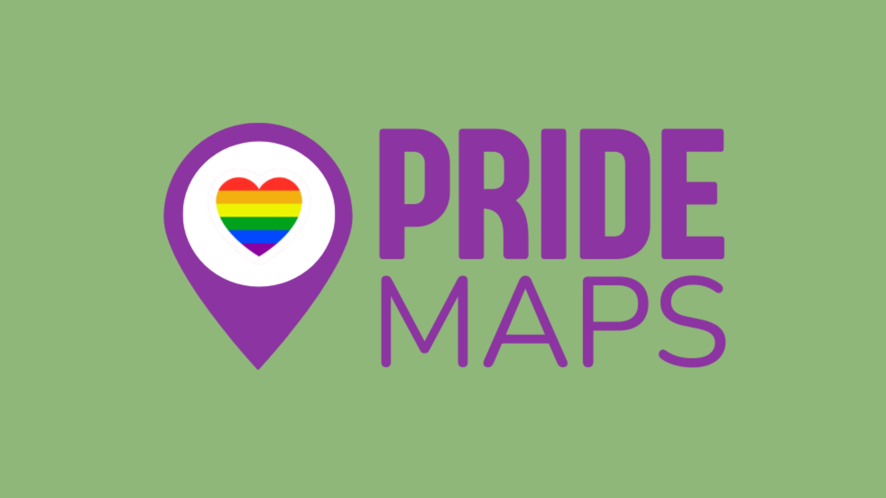
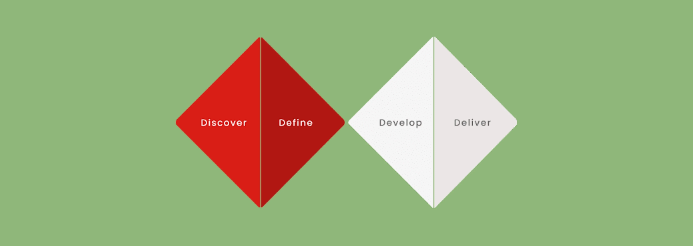
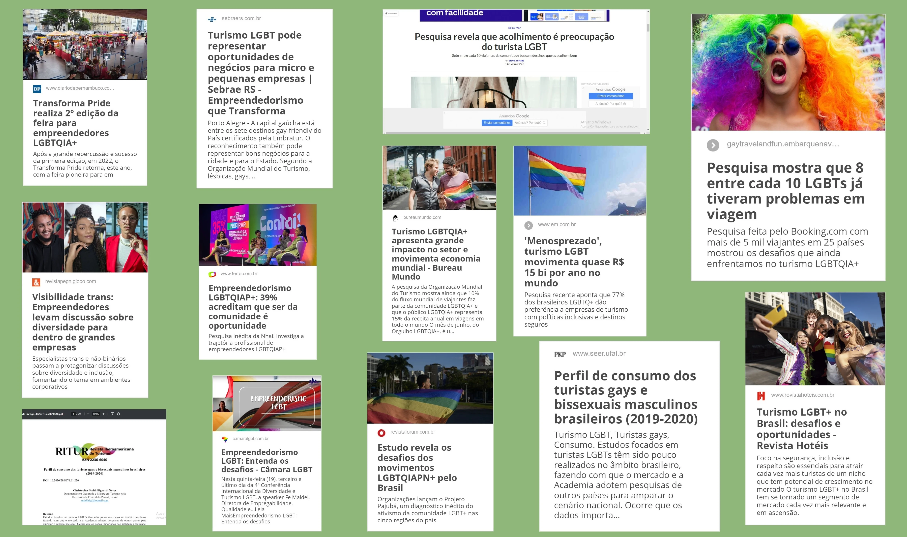
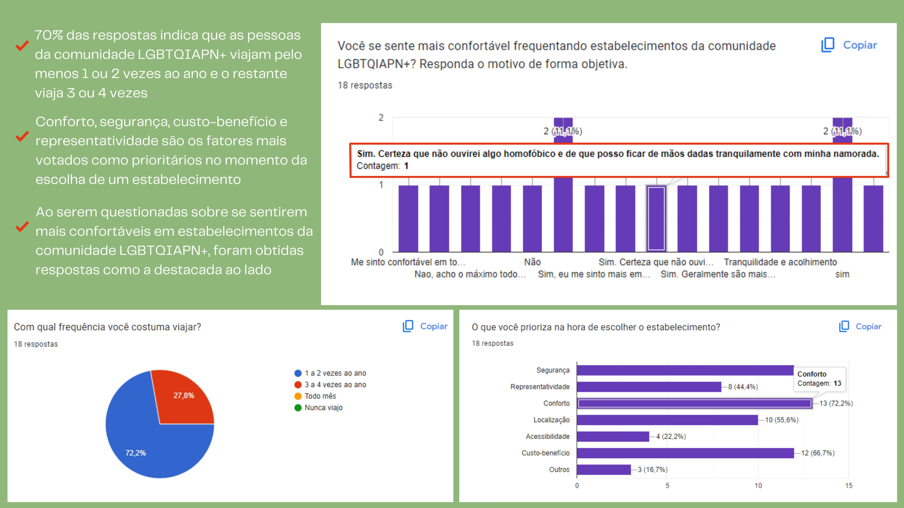
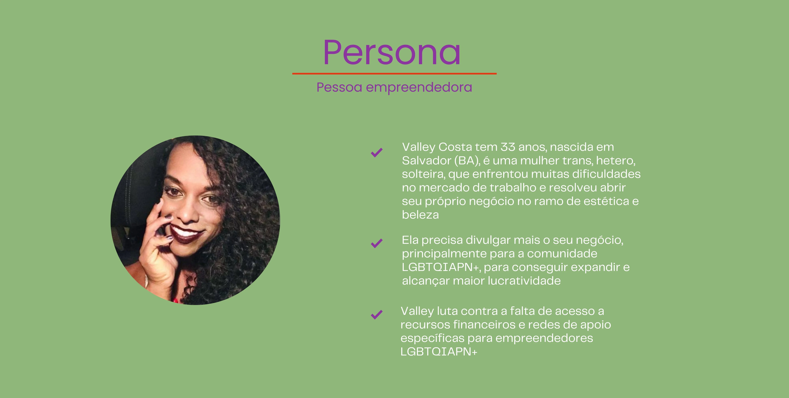
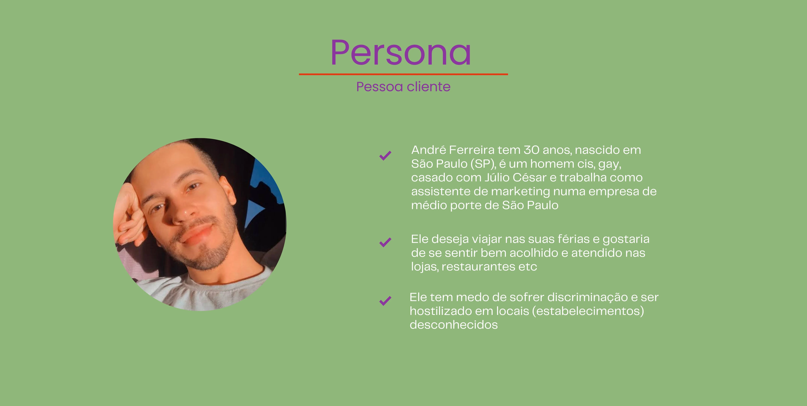
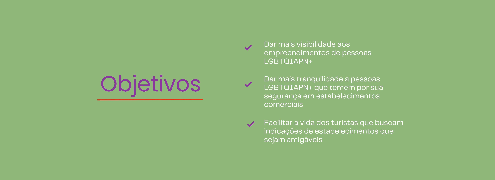
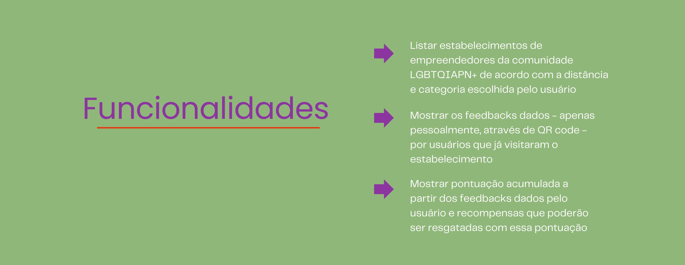
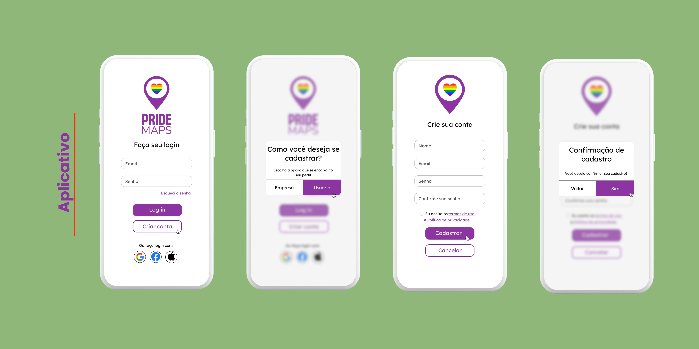
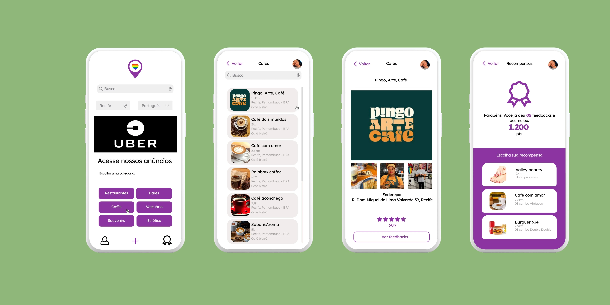

O aplicativo PrideMaps foi desenvolvido durante a quarta edição do HackaPride, maratona de inovação voltada para a comunidade LGBTQIAPN+ e organizada pela empresa CiTi. O app é uma espécie de hub que lista estabelecimentos feitos por pessoas empreendedoras da comunidade LGBTQIAPN+. O PrideMaps foi criado como uma solução para o seguinte desafio: Empreendedorismo LGBTQIA+ construindo oportunidade para todes.
O principal objetivo do PrideMaps é ajudar pessoas da comunidade LGBTQIAPN+ a encontrar e frequentar lugares onde possam se sentir seguras e bem-vindas, sem o receio de serem hostilizadas devido à sua orientação sexual e/ou identidade de gênero. Este resumo apresenta as etapas de concepção do aplicativo, desde a pesquisa inicial, passando pela ideação, até a prototipação, todas realizadas dentro do contexto do hackathon.

#1 Pesquisa
Na fase inicial, a equipe realizou uma desk research para entender melhor as dores e desafios das pessoas empreendedoras da comunidade LGBTQIAPN+ e coletar informações essenciais para o direcionamento do projeto. Durante essa pesquisa, além de fatos relacionados às pessoas empreendedoras, descobrimos também que turistas da comunidade LGBTQIAPN+ costumam gastar até 30% mais do que pessoas heteronormativas, o que nos levou ao segundo perfil.
Com base nisso, conduzimos uma pesquisa quantitativa semiestruturada através de um formulário focado nesse público. Recebemos um total de 18 respostas, permitindo-nos observar padrões de comportamento e necessidades dessas pessoas usuárias e validar algumas informações obtidas na desk research.
Após as descobertas, desenvolvemos duas personas: pessoa empreendedora e pessoa cliente. Essas personas foram essenciais para direcionar o desenvolvimento do aplicativo, assegurando ele fosse projetado de maneira a atender às necessidades e expectativas de ambos os grupos dentro da comunidade LGBTQIAPN+.




#2 Ideação
Com base nos insights obtidos durante a pesquisa, definimos os objetivos da solução (listados abaixo) e, através de sessões de brainstorming, chegamos ao PrideMaps. Concluímos que teríamos que incluir dois tipos de perfis de acesso, um para a pessoa empreendedora e outro para a pessoa cliente. A pessoa pode pesquisar locais em que deseja visitar, sendo esses locais divididos por categorias e exibidos de acordo com a distância.
Além disso, entendemos que um sistema de feedbacks ajudaria a manter a confiabilidade do app, desde que esse feedback fosse feito de forma segura.
Sendo assim, definimos que esses feedbacks seriam dados por clientes que estivessem efetivamente no local, a partir da leitura de um QR Code (disponibilizado nos estabelecimentos), desta forma, evitamos que pessoas mal-intencionadas baixem o app apenas para postar comentários maldosos. A partir desses feedbacks, o usuário não só ajudará outras pessoas, que visitarão esses locais com mais tranquilidade, como também acumulará pontos que poderão ser trocados por recompensas.
Por outro lado, caso o estabelecimento tenha muitos feedbacks negativos, ele passará por uma avaliação minuciosa e poderá ter seu cadastro banido.


#3 Prototipação
Na fase de prototipação, desenvolvemos no figma algumas telas essenciais para a entrega, sendo elas: o login, que existe no modo usuário e no modo empreendedor; a página principal (de pesquisa), que possibilita a busca por locais da escolha do usuário; a página de recompensas, que indica a pontuação acumulada a partir dos feedbacks dados e as recompensas que o usuário pode adquirir com essa pontuação.

